原理
基础概念
- 块位置：左上角为原点 (0, 0) 向下 x+，向右 y+
- 版本表示：Version V-E（其中 V 是版本号，E 是纠错等级）
- 数据表示：黑块 -1 白块 -0
- 大小：从版本 1 到版本 40 依次是 21x21 ～ 177x177（每增加一个版本，边长增加 4）
- 支持的最多字符数（版本40）
- 数字模式：7089
- 字母模式：4296
- 字节模式：2953
- 日文模式：1817
- 纠错等级允许的恢复比例
- L：7%
- M：15%
- Q：25%
- H：30% 二维码的纠错功能是通过将信息重复存储表示来实现的，这部分重复的内容称为冗余数据。这样，即使当二维码的某部分遭到损坏或被遮挡，也可以通过冗余数据信息还原出来。
二维码结构
功能图案
- 特征符，7x7 黑圈 5x5 白圈 3x3 黑块
- 分割线，在特征符周围的一圈全白区域
- 定位图形，第 7 行第 7 列的两条黑白条纹
- 矫正图案， 1 无，版本 2-6有 1 个，版本 7-13 有 6 个……
- 空白区，至少 4 个单位宽
编码区域
- 格式信息，左上角分割线外一圈，左下角分割线右侧，右上角分割线下侧
- 版本信息，版本 7 后才有，在左下分割线上侧，右上分割线左侧
- 数据及纠错码区域
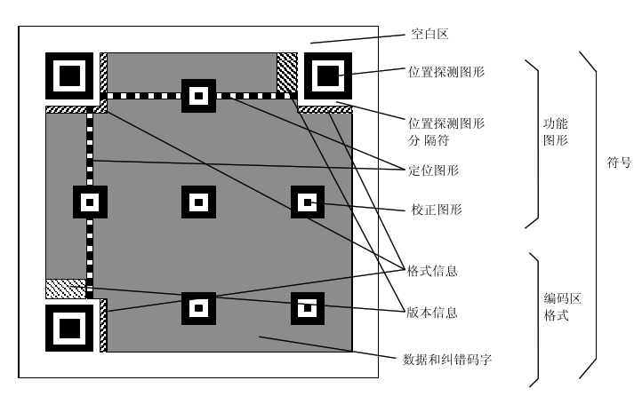
定位图案
扫描器在进行二维码扫描的时候会根据这三个定位标识符来更正二维码的坐标，方便进行扫描。这块区域的尺寸固定，无论是哪个版本的二维码，他的尺寸都是7*7的模块。
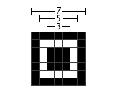
矫正图案
版本2以上的二维码才有，同样是为了定位用的。它的尺寸也是固定的，为5*5的模块。
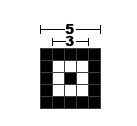
定位图形
一单位宽的黑白交替点带，由黑色点起始和结束。原因是二维码有40种尺寸，尺寸过大了后需要有根标准线，不然扫描的时候可能会扫歪了。
填充模板
不同的Verion有不同的固定格式的填充模板，这有利于在修复时利用。
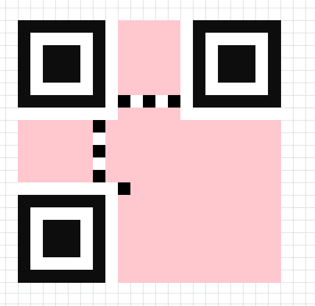
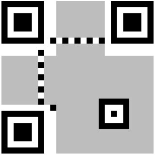
为了增强二维码的容错能力，保证在一定的损坏范围内，不会影响数据的读取，共设计了两个区域来存放两条一模一样的格式信息。
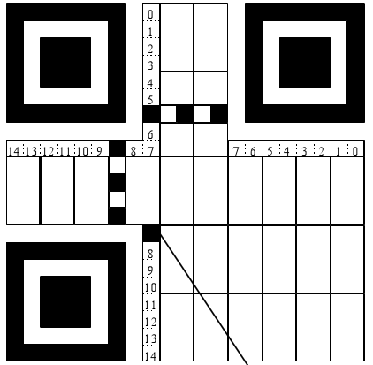
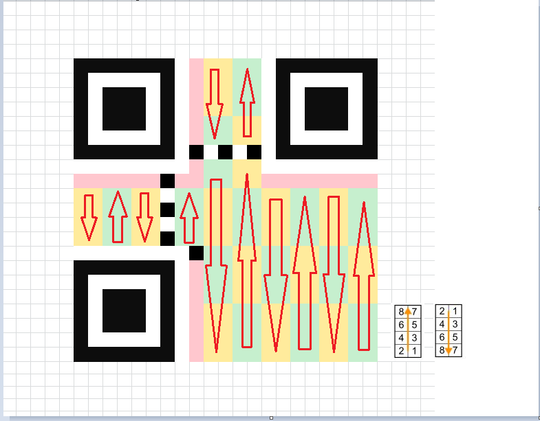
掩码
生成一个完整的二维码，还需要先将现在所拥有的数据填入提前准备的空白模板后，选择一个合适的掩码，将原模板的数据与掩码进行异或运算，最后，再将得到的结果填进去就生成了二维码。
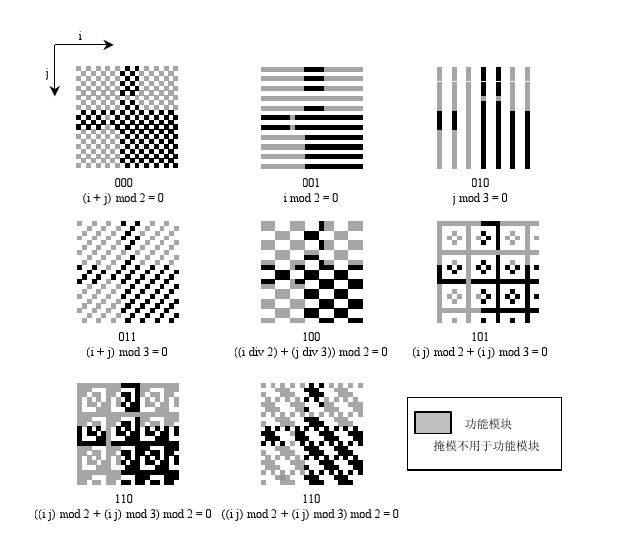
Micro QR Code
Micro QR Code 的一大特点是它只有一个位置检测图案，而普通 QR Code 则需要一定的面积，因为位置检测图案位于符号的三个角。
此外，QR Code 要求符号周围至少有四个模块的宽边距，而 Micro QR Code 两个模块的宽边距就足够了。Micro QR Code 的这种配置允许在比 QR Code 更小的区域中打印。
Micro QR Code 中可以存储的数据量最多 35 个数字。
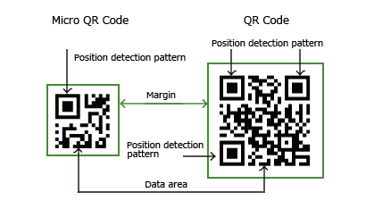
DotCode
是由不连续的点组成的符号，用于标识小型和难以标记的物品的一种二维码。
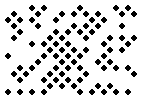
Aztec码
Aztec码是一种可扫描的矩阵条码，经过编码以存储一组特定的数据，可以水平和垂直阅读。
DataMatrix
Datamatrix是一种矩阵式二维条码，其发展的构想是希望在较小的条码标签上存入更多的资料量。Datamatrix的最小尺寸是所有条码中最小的，尤其特别适用于小零件的标识，以及直接印刷在实体上。
汉信码
汉信码是中国自主开发的一种二维码标准。
MaxiCode
PDF417
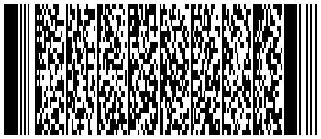
二维码在线编辑工具
二维码XOR脚本
用于生成一个随机的图与二维码进行异或。
import numpy as np
from PIL import Image
import cv2
import os
SCALE = 10
MATRIX_SIZE = 29
def extract_qrcode_matrix_precisely(image_path, debug_save_path=None):
"""从二维码图片精确提取29x29矩阵"""
img = cv2.imread(image_path, cv2.IMREAD_GRAYSCALE)
_, binary = cv2.threshold(img, 127, 255, cv2.THRESH_BINARY)
# 去除白边
coords = cv2.findNonZero(255 - binary)
x, y, w, h = cv2.boundingRect(coords)
cropped = binary[y:y+h, x:x+w]
# 确保是方形
size = min(w, h)
cropped = cropped[0:size, 0:size]
# 检测模块宽度
module_size = size // 29
matrix = np.zeros((29, 29), dtype=np.uint8)
for i in range(29):
for j in range(29):
cell = cropped[i*module_size:(i+1)*module_size, j*module_size:(j+1)*module_size]
# 判断该模块是黑是白（多数投票）
black_ratio = np.mean(cell < 128)
matrix[i, j] = 1 if black_ratio > 0.5 else 0
if debug_save_path:
img = Image.fromarray((1 - matrix) * 255)
img = img.resize((290, 290), Image.NEAREST)
img.save(debug_save_path)
return matrix
def matrix_to_image(matrix, path, scale=SCALE):
"""01矩阵保存为放大的图像"""
img = (1 - matrix) * 255
img = Image.fromarray(img.astype(np.uint8), mode='L')
img = img.resize((matrix.shape[1]*scale, matrix.shape[0]*scale), resample=Image.NEAREST)
img.save(path)
def image_to_matrix(path, scale=SCALE):
"""从图像读取并还原为01矩阵"""
img = Image.open(path).convert('L')
img = img.resize((MATRIX_SIZE, MATRIX_SIZE), resample=Image.NEAREST)
arr = np.array(img)
matrix = (arr < 128).astype(np.uint8)
return matrix
def split_qrcode(image_path, out_dir='output'):
"""拆分二维码成两个部分"""
os.makedirs(out_dir, exist_ok=True)
qrcode_matrix = extract_qrcode_matrix_precisely(image_path, debug_save_path=os.path.join(out_dir, 'extracted_matrix.png'))
rand_matrix = np.random.randint(0, 2, size=(MATRIX_SIZE, MATRIX_SIZE), dtype=np.uint8)
xor_matrix = np.bitwise_xor(qrcode_matrix, rand_matrix)
matrix_to_image(rand_matrix, os.path.join(out_dir, 'part1.png'))
matrix_to_image(xor_matrix, os.path.join(out_dir, 'part2.png'))
matrix_to_image(qrcode_matrix, os.path.join(out_dir, 'original_matrix.png'))
print("拆分完成：已保存 part1.png、part2.png、original_matrix.png、extracted_matrix.png")
def restore_qrcode(part1_path, part2_path, output_path='output/restored.png'):
"""恢复原始二维码"""
m1 = image_to_matrix(part1_path)
m2 = image_to_matrix(part2_path)
restored = np.bitwise_xor(m1, m2)
matrix_to_image(restored, output_path)
print(f"已恢复二维码并保存为 {output_path}")
if __name__ == '__main__':
# 拆分原始二维码
split_qrcode('flag.png', out_dir='output')
# 恢复二维码
restore_qrcode('output/part1.png', 'output/part2.png', output_path='output/restored.png')